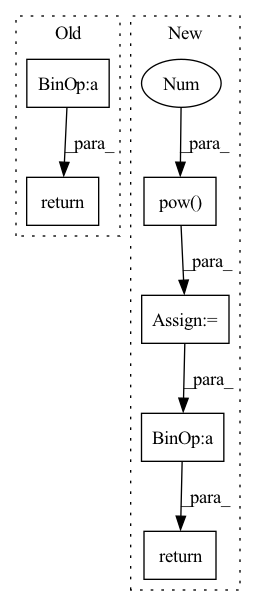

Pattern ID :2783
Before Change
u = x.mean(-1, keepdim=True)
s = (x - u).pow(2).mean(-1, keepdim=True)
x = (x - u) / torch.sqrt(s + self.variance_epsilon)
return self.gamma * x + self.beta
After Change
weight = self.weight + self.weight_dense(cond)
bias = self.bias + self.bias_dense(cond)
u = inputs.mean(-1, keepdim=True)
s = (inputs - u).pow(2 ) .mean(-1, keepdim=True)
x = (inputs - u) / torch.sqrt(s + self.variance_epsilon)
return weight * x + bias
In pattern: SUPERPATTERN
Frequency: 3
Non-data size: 6
Instances Fragment ID: 15484524
Project Name: 920232796/bert_seq2seq
Commit Name: 76a9cf45cad987e423a9cc511eef0d4eb49620ac
Time: 2020-06-22
Author: xingzhaohu@xingzhaohudeMacBook-Pro.local
File Name: bert_seq2seq/model/bert_model.py
M Class Name: BertLayerNorm
N Class Name: BertLayerNorm
M Method Name: forward(2)
N Method Name: forward(2)
M Parent Class: nn.Module
N Parent Class: nn.Module
M File Name: bert_seq2seq/model/bert_model.py
N File Name: bert_seq2seq/model/bert_model.py
M Start Line: 65
M End Line: 68
N Start Line: 72
N End Line: 93
Before Change
// attention GMM parameters
g_t = torch.softmax(g_t, dim=-1) + self.epsilon // distribution weight
sig_t = torch.exp(b_t) + self.epsilon // variance
mu_t = self.mu_tm1 + self.attention_alignment * torch.exp(k_t) // mean
g_t = g_t.unsqueeze(2).expand(g_t.size(0),
g_t.size(1),
inputs.size(1))
sig_t = sig_t.unsqueeze(2).expand_as(g_t)
mu_t_ = mu_t.unsqueeze(2).expand_as(g_t)
j = self.J[:g_t.size(0), :, :inputs.size(1)]
// attention weights
phi_t = g_t * torch.exp(-0.5 * sig_t * (mu_t_ - j)**2)
alpha_t = self.COEF * torch.sum(phi_t, 1)
// apply masking
// if mask is not None:
// alpha_t.data.masked_fill_(~mask, self._mask_value)
breakpoint()
c_t = torch.bmm(alpha_t.unsqueeze(1), inputs).squeeze(1)
self.mu_tm1 = mu_t
return c_t, mu_t, alpha_t
class Attention(nn.Module):After Change
// g_t = torch.softmax(g_t, dim=-1) + self.epsilon // distribution weight
// sig_t = torch.exp(b_t) + self.epsilon // variance
// mu_t = self.mu_prev + self.attention_alignment * torch.exp(k_t) // mean
sig_t = torch.pow( torch.nn.functional.softplus(b_t), 2 )
mu_t = self.mu_prev + torch.nn.functional.softplus(k_t)
g_t = (torch.softmax(g_t, dim=-1) / sig_t) * self.COEF
g_t = g_t.unsqueeze(2).expand(g_t.size(0),
g_t.size(1),
inputs.size(1))
sig_t = sig_t.unsqueeze(2).expand_as(g_t)
mu_t_ = mu_t.unsqueeze(2).expand_as(g_t)
j = self.J[:g_t.size(0), :, :inputs.size(1)]
// attention weights
phi_t = g_t * torch.exp(-0.5 * sig_t * (mu_t_ - j)**2)
alpha_t = torch.sum(phi_t, 1)
// apply masking
if mask is not None:
alpha_t.data.masked_fill_(~mask, self._mask_value)
context = torch.bmm(alpha_t.unsqueeze(1), inputs).squeeze(1)
self.attention_weights = alpha_t
self.mu_prev = mu_t
breakpoint()
return context
class OriginalAttention(nn.Module): Fragment ID: 15484526
Project Name: coqui-ai/tts
Commit Name: adf9ebd629abc21e0969db2a1c29f389b5301c9d
Time: 2019-11-12
Author: egolge@mozilla.com
File Name: layers/common_layers.py
M Class Name: GravesAttention
N Class Name: GravesAttention
M Method Name: forward(4)
N Method Name: forward(4)
M Parent Class: nn.Module
N Parent Class: nn.Module
M File Name: layers/common_layers.py
N File Name: layers/common_layers.py
M Start Line: 141
M End Line: 169
N Start Line: 149
N End Line: 180
Before Change
x_std = x.std(dim=2, keepdim=True).detach()
// make sure x_std is not zero
x_std += self.div_guard
return (x - x_mean) / x_std
class DitherAudio(nn.Module):After Change
mask = x.abs() > 0.0
num_elements = mask.sum(dim=2, keepdim=True).detach()
x_mean = x.sum(dim=2, keepdim=True).detach() / num_elements
numerator = (x - x_mean).pow(2 ) .sum(dim=2, keepdim=True).detach()
x_std = (numerator / num_elements).sqrt()
// make sure x_std is not zero
x_std += self.div_guard
result = (x - x_mean) / x_std
return torch.masked_fill(result, ~mask , 0.0)
class DitherAudio(nn.Module): Fragment ID: 15484529
Project Name: scart97/thunder-speech
Commit Name: 3d09ac6c7b268acc613d657986845cce31dacd26
Time: 2021-06-17
Author: scart.lucas@gmail.com
File Name: src/thunder/quartznet/transform.py
M Class Name: FeatureBatchNormalizer
N Class Name: FeatureBatchNormalizer
M Method Name: forward(2)
N Method Name: forward(2)
M Parent Class: nn.Module
N Parent Class: nn.Module
M File Name: src/thunder/quartznet/transform.py
N File Name: src/thunder/quartznet/transform.py
M Start Line: 74
M End Line: 78
N Start Line: 74
N End Line: 82